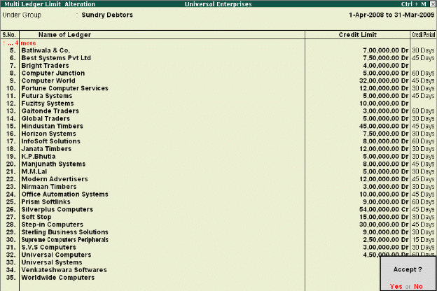

Credit Limits
Tally.ERP 9 provides you with the feature to set threshold limits for the trading transactions with your Sundry Debtors. On setting the Credit Limits, transactions beyond the specified limit are restricted. This feature is very significant in reducing potential bad debts.
To activate Credit limits,
# Set Maintain Budgets & Controls to Yes in F11: Accounting Features To set Credit limits, Go to Gateway of Tally > Accounts Info. > Ledgers >Credit Limits,
# Select the required Group.
# Specify the Credit limit for each ledger account and the applicable credit period
